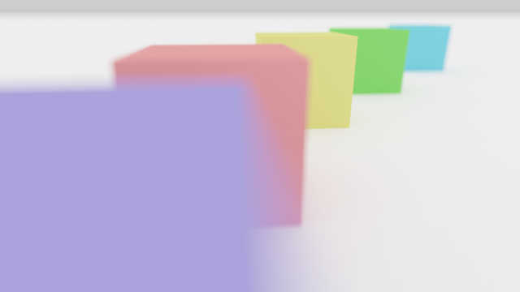

(Task 1) Generating Camera Rays
Walkthrough Video
“Camera rays” emanate from the camera and measure the amount of scene radiance that reaches a point on the camera’s sensor plane. (Given a point on the virtual sensor plane, there is a corresponding camera ray that is traced into the scene.)
Take a look at Pathtracer::trace_pixel in student/pathtracer.cpp. The job of this function is to compute the amount of energy arriving at this pixel of the image. Conveniently, we’ve given you a function Pathtracer::trace_ray(r) that provides a measurement of incoming scene radiance along the direction given by ray r. See lib/ray.h for the interface of ray.
Here are some rough notes giving more detail on how to generate camera rays.
This tutorial from Scratchapixel also provides a detailed walkthrough of what you need to do. (Note that the coordinate convention that Scratchpixel adopted is different from the one we use, and you should stick to the coordinate system from the rough notes all the time.)
Step 1: Given the width and height of the screen, and point in screen space, compute the corresponding coordinates of the point in normalized ([0-1]x[0-1]) screen space in Pathtracer::trace_pixel. Pass these coordinates to the camera via Camera::generate_ray in camera.cpp.
Step 2: Implement Camera::generate_ray. This function should return a ray in world space that reaches the given sensor sample point. We recommend that you compute this ray in camera space (where the camera pinhole is at the origin, the camera is looking down the -Z axis, and +Y is at the top of the screen.). In util/camera.h, the Camera class stores vert_fov and aspect_ratio indicating the vertical field of view of the camera (in degrees, not radians) as well as the aspect ratio. Note that the camera maintains camera-space-to-world space transform matrix iview that will come in handy.
Step 3: Your implementation of Pathtracer::trace_pixel must support super-sampling. The member Pathtracer::n_samples specifies the number of samples of scene radiance to evaluate per pixel. The starter code will hence call Pathtracer::trace_pixel one time for each sample, so your implementation of Pathtracer::trace_pixel should choose a new location within the pixel each time.
To choose a sample within the pixel, you should implement Rect::Uniform::sample (see src/student/samplers.cpp), such that it provides (random) uniformly distributed 2D points within the rectangular region specified by the origin and the member Rect::Uniform::size. Then you may then create a Rect::Uniform sampler with a one-by-one region and call sample() to obtain randomly chosen offsets within the pixel.
Once you have implemented Pathtracer::trace_pixel, Rect::Uniform::sample and Camera::generate_ray, you should have a working camera.
Tip: Since it’ll be hard to know if you camera rays are correct until you implement primitive intersection, we recommend debugging your camera rays by checking what your implementation of Camera::generate_ray does with rays at the center of the screen (0.5, 0.5) and at the corners of the image.
The code can log the results of raytracing for visualization and debugging. To do so, simply call function Pathtracer::log_ray in your Pathtracer::trace_pixel. Function Pathtracer::log_ray takes in 3 arguments: the ray tat you want to log, a float that specifies the distance to log that ray up to, and a color for the ray. If you don’t pass a color, it will default to white. You should only log only a portion of the generated rays, or else the result will be hard to interpret. To do so, you can add if(RNG::coin_flip(0.0005f)) log_ray(out, 10.0f); to log 0.05% of camera rays.
Finally, you can visualize the logged rays by checking the box for Logged rays under Visualize and then starting the render (Open Render Window -> Start Render). After running the path tracer, rays will be shown as lines in visualizer. Be sure to wait for rendering to complete so you see all rays while visualizing.

Step 4: Camera also includes the members aperture and focal_dist. These parameters are used to simulate the effects of de-focus blur and bokeh found in real cameras. Focal distance represents the distance between the camera aperture and the plane that is perfectly in focus. To use it, you must simply scale up the sensor position from step 2 (and hence ray direction) by focal_dist instead of leaving it on the z = -1 plane. You might notice that this doesn’t actually change anything about your result, since this is just scaling up a vector that is later normalized. However, now aperture comes in: by default, all rays start a single point, representing a pinhole camera. But when aperture > 0, we want to randomly choose the ray origin from an aperturexaperture square centered at the origin and facing the camera direction (-Z). Then, we use this point as the starting point of the ray while keeping its sensor position fixed (consider how that changes the ray direction). Now it’s as if the same image was taken from slightly off origin. This simulates real cameras with non-pinhole apertures: the final photo is equivalent to averaging images taken by pinhole cameras placed at every point in the aperture.
Finally, we can see that non-zero aperture makes focal distance matter: objects on the focal plane are unaffected, since where the ray hits on the sensor is the same regardless of the ray’s origin. However, rays that hit objects objects closer or farther than the focal distance will be able to “see” slightly different parts of the object based on the ray origin. Averaging over many rays within a pixel, this results in collecting colors from a region larger slightly than that pixel would cover given zero aperture, causing the object to become blurry. We are using a square aperture, so bokeh effects will reflect this.
You can test aperture/focal distance by adjusting aperture and focal_dist using the camera UI and examining logging rays. Once you have implemented primitive intersections and path tracing (tasks 3/5), you will be able to properly render dof.dae:

Extra credit ideas:
- Write your own camera pixel sampler (replacing Rect::Uniform) that generates samples with improved distribution. Some examples include:
- Jittered Sampling
- Multi-jittered sampling
- N-Rooks (Latin Hypercube) sampling
- Sobol sequence sampling
- Halton sequence sampling
- Hammersley sequence sampling